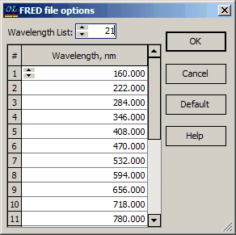

FRED format
FRED format
OptiLayer offers the capability to export design specifications in the FRED optical engineering and modeling software format provided by Photon Engineering LLC (website: http://www.photonengr.com). In the export process, certain materials may need to be converted to a tabular form. Hence, it is essential to specify the wavelength grid for the tabular presentation of these materials. This ensures that the data is accurately represented and formatted for seamless integration with the FRED software. The specification of the wavelength grid is necessary to facilitate the proper conversion and utilization of the corresponding materials in the optical engineering and modeling software.

When you click on the Default button in OptiLayer, it generates an evenly spaced wavelength grid with 21 points spanning from 400 to 800 nm. After clicking the OK button, you will be prompted to specify a filename for the file that will store the coating data. The default extension for this file should be *.frt. This process allows you to save the coating data in a file format compatible with the FRED optical engineering and modeling software, ensuring that the data is accurately represented and ready for further analysis within the software platform.